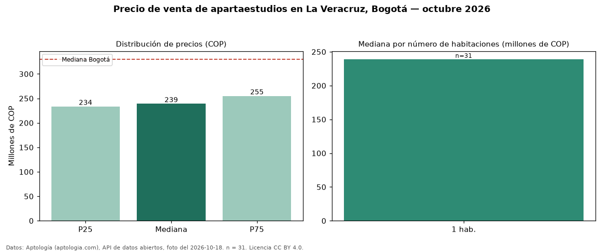

Precio de venta de apartaestudios en La Veracruz, Bogotá — octubre 2026
Con 31 avisos vigentes, el precio mediano de apartaestudios en venta en La Veracruz, Bogotá es COP 239 millones. Comparado con la mediana de la ciudad, COP 330 millones, la diferencia es de 28 % por debajo. Por mediana, es el puesto 27 de 28 barrios de Bogotá con al menos 30 avisos de apartaestudios en venta: entre los más económicos. Con la mediana de arriendo del mismo barrio (COP 1.700.000 al mes), el arriendo anual equivale a 8,5 % del precio de venta: una aproximación gruesa a la rentabilidad bruta, porque compara medianas de ofertas distintas. El segmento con más oferta es el de 1 habitación (31 avisos, mediana COP 239 millones). 3 % de los avisos incluye parqueadero. El aviso más barato pide COP 215 millones y el más caro COP 389 millones. Datos: Aptología (aptologia.com), API de datos abiertos, licencia CC BY 4.0 — https://www.aptologia.com/apartaestudios-en-venta/bogota/la-veracruz. Archivos: PDF de 2 páginas, CSV con las cifras y gráfica PNG.

| Avisos únicos | 31 |
|---|---|
| Percentil 25 | COP 233.500.000 |
| Mediana | COP 239.000.000 |
| Percentil 75 | COP 255.000.000 |
Fuente: avisos vigentes de portales inmobiliarios recopilados por Aptología, deduplicados (mínimo 30 avisos únicos por celda). Precios pedidos, no cerrados. Fecha: 2026-10-18.